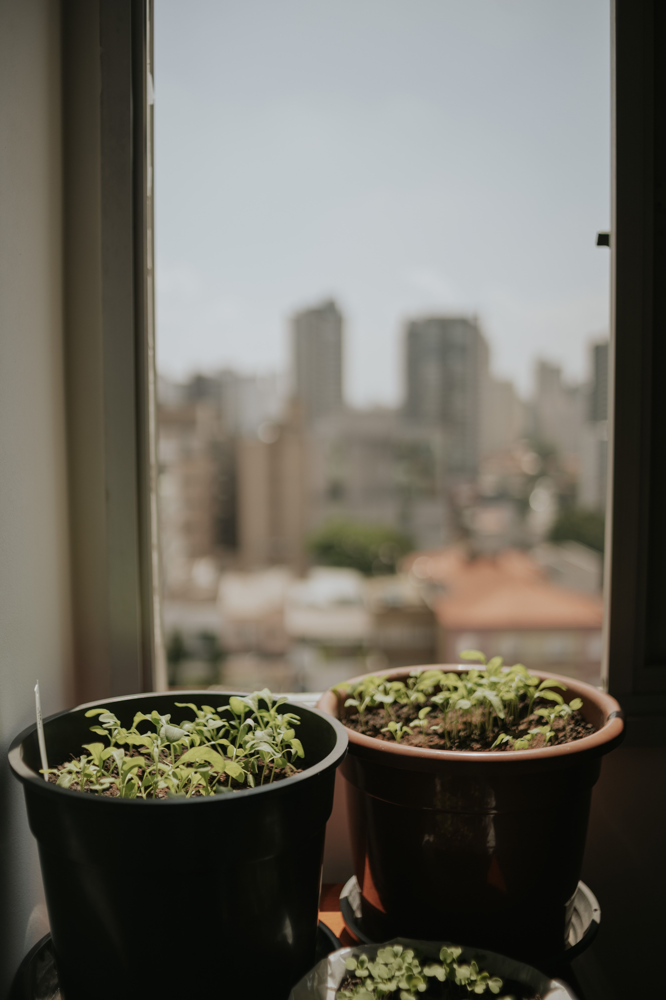
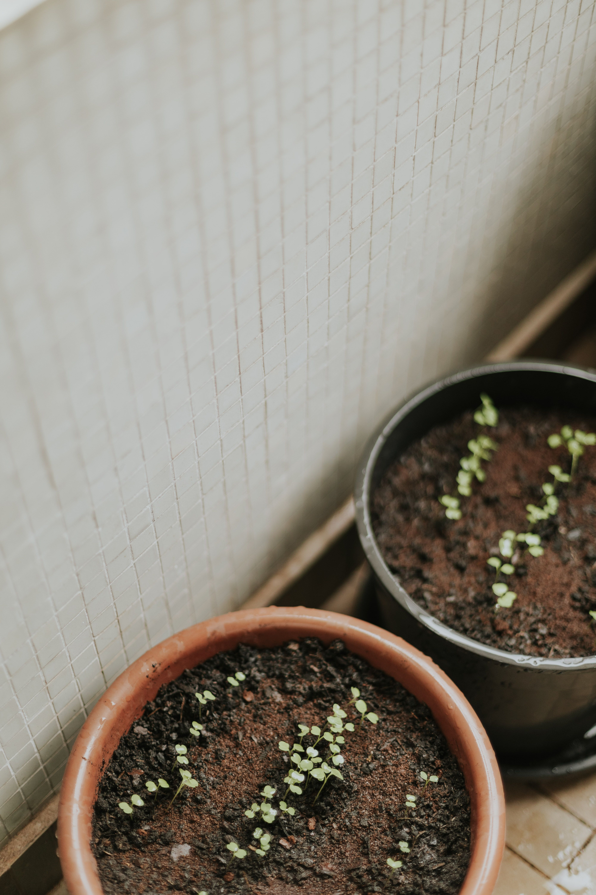
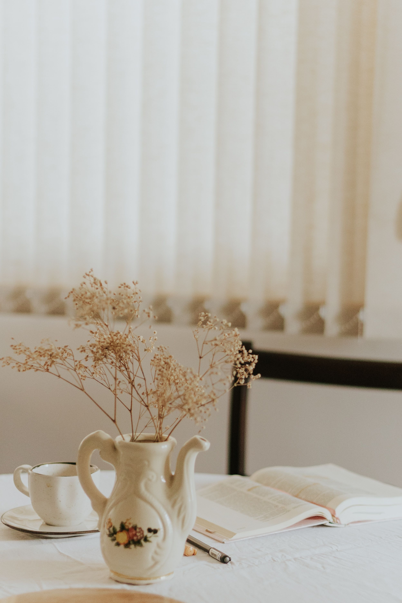

In This Article
- Introduction
- Make Better Use of Windows and Incoming Light
- Use Curtains, Colors, and Surfaces That Reflect Light Better
- Improve Layout and Habits to Preserve Brightness
- Frequently Asked Questions
Introduction
Learn how to improve natural lighting at home with a better layout, suitable curtains, light colors, mirrors, and simple habits.
Before making changes, observe the real conditions of the space, define the problem you want to solve, and prioritize the measures with the greatest impact. This planning helps avoid impulse purchases and solutions that are difficult to maintain.
This guide follows a practical structure: introduction, main sections, practical advice, frequently asked questions, and a useful conclusion. Each recommendation is designed to be applied gradually.
Whenever an intervention involves installations, structural changes, working at height, or potentially dangerous products, use safe methods and hire a qualified professional when necessary.
Make Better Use of Windows and Incoming Light
Before buying lamps or painting walls, observe how natural light enters each room. Window orientation, nearby buildings, trees, and the size of the openings determine how much daylight a home receives and at what times. Observe the room in the morning, at midday, and in the afternoon to identify the brightest areas and those that need support.
The first step is often to remove unnecessary obstacles in front of windows. A tall cabinet, deep shelving unit, or oversized plant can block a significant amount of light. Rearranging these elements can create an immediate improvement without spending money. The goal is not to leave windows completely empty, but to keep solid objects from interrupting the path of daylight.
Curtains should open fully when you want to maximize brightness. If the curtain rod ends exactly over the frame, some fabric may continue covering the glass even when pulled back. A slightly wider rod lets the curtains move farther to the sides. Easy-to-use systems are also important because complicated treatments often remain closed longer than intended.
Dirty glass reduces the amount of light passing through a window. Periodic cleaning of glass, frames, shutters, and blinds improves brightness and provides an opportunity to inspect seals, condensation, and small defects. Use products compatible with the frame material and avoid unsafe work at height.
If the room has blinds, shutters, or shades, adjust their angle to redirect light toward the ceiling or walls instead of closing them completely. In many rooms, an intermediate position preserves privacy while still allowing daylight to enter. This balance is particularly useful in urban homes facing nearby buildings.
Interior doors also influence brightness. Leaving doors open between rooms during the day allows light from a brighter room to reach interior spaces. During renovations, doors with translucent glazing can share daylight while maintaining privacy, provided they are suitable and meet safety requirements.
In hallways and entry areas without windows, borrowing daylight from adjacent rooms can be more effective than relying only on electric lighting. Light surfaces, open doors, and an uncluttered layout help brightness travel farther into the home.
Practical Tip
Make changes gradually and observe the result before continuing. This helps identify which measure is actually effective and prevents unnecessary expenses or extra maintenance.
Use Curtains, Colors, and Surfaces That Reflect Light Better
Curtain fabrics strongly affect perceived brightness. A light sheer can filter sunlight and provide some privacy without darkening the room completely. In bedrooms, it can be paired with an opaque layer for sleeping. This layered system allows the room to adapt throughout the day instead of forcing a choice between full light and total darkness.

Light colors reflect more light. Off-white, soft beige, light gray, and pale tones can make a room feel brighter. The entire home does not need to be white, but very dark combinations can reduce brightness in spaces that already receive limited daylight.
The ceiling deserves special attention. A light finish can reflect incoming daylight and distribute it more effectively. Dark beams, molding, or architectural details can add character, but they also absorb some light. If brightness is the priority, keeping the ceiling relatively light can help.
Furniture affects light as well. A large dark sofa positioned near a window can absorb light and add visual weight. Replacing it is not always necessary; lighter rugs, cushions, walls, or nearby finishes can help balance the room. When buying new furniture, consider how its color and finish affect overall brightness.
Mirrors can help when they reflect a light source. Positioning a mirror opposite or diagonally from a window can distribute brightness and create a sense of depth. Before mounting it permanently, check what it reflects from several angles. A mirror reflecting a dark wall or cluttered area will have less benefit.
Satin finishes, glass, light ceramic surfaces, and some metals also reflect light, but moderation is important. Too many glossy surfaces can produce uncomfortable reflections. The objective is gentle redistribution of light rather than glare.
In kitchens, light cabinet fronts and medium or pale countertops can improve perceived brightness. In small bathrooms, a large mirror and reflective light-colored finishes can make the room feel less enclosed.
What Should You Keep in Mind?
Apply changes gradually and evaluate them in real conditions. Daylight changes with time, season, and weather, so a solution should work throughout normal daily use.
Improve Layout and Habits to Preserve Brightness
Furniture placement should allow daylight to move through the room. Taller pieces usually work better on walls perpendicular to or farther from windows. A large wardrobe directly opposite an opening can create a broad shadow. Before moving heavy furniture, sketch a simple plan and test positions without blocking circulation.
Open shelving can allow some light through, but when completely packed it becomes a solid visual block. Alternating books and objects with open areas creates a lighter effect. In darker spaces, a low shelving unit may work better than a tall structure.

Plants should be placed according to their light requirements. A large plant can work near a window if it does not block daylight from reaching the rest of the room. Smaller species can be grouped on side shelves. Do not compromise plant health solely for a decorative composition.
In narrow rooms, keeping the floor visually open helps light reach more surfaces. Furniture with visible legs, lightweight tables, and well-positioned vertical storage can increase the sense of space. Function still comes first: closed storage may be preferable if it reduces visible clutter.
Cleaning and organization directly affect the perception of light. Surfaces crowded with objects create many small shadows and increase visual noise. Clearing countertops, tables, shelves, and windowsills allows brightness to appear more even.
If a room receives little natural light because of structural conditions, decorative tricks cannot solve everything. Combine realistic daylight improvements with well-distributed artificial lighting. Several softer sources can complement daylight without creating harsh contrast.
A bright home does not depend only on window size. Layout, color, cleanliness, fabrics, and daily habits can greatly improve perceived brightness. The best strategy is to identify what blocks or absorbs light and correct those points gradually.
Practical Recommendations
Observe the room at several times of day before making permanent changes. A position that works in the morning may behave differently in the afternoon.
How to Improve Natural Light in Each Room
In the living room, keep the window area open and arrange furniture so daylight can reach the center. If a sofa must sit near a window, try to keep its back from rising far above the sill. Lightweight side tables and low furniture help preserve an open view.
In the bedroom, natural light must be balanced with privacy and sleep. Layered curtains provide daylight during the day and darkness at night. Avoid placing a wardrobe where it blocks part of the window or creates a large shadow. In a small bedroom, a lighter palette can reinforce the sense of space.
In the kitchen, a clear windowsill and light cabinet fronts improve light distribution. If tall cabinets are close to a window, avoid letting them project too far into the opening. Naturally lit work surfaces are more comfortable during the day and can reduce the need for electric light.

In the bathroom, a well-positioned mirror can reflect daylight. Light finishes and transparent shower screens maintain visual continuity. Where privacy is required, translucent glass or an appropriate blind can admit light without exposing the interior.
Interior hallways are often the most difficult spaces. Open nearby doors during the day, use light wall colors, and position mirrors strategically. If renovation is possible, doors with translucent panels can share daylight between rooms.
Common Mistakes That Reduce Natural Light
One common mistake is placing too many tall pieces of furniture near windows. Even when each piece seems reasonable on its own, together they can form a barrier that restricts daylight and makes the room feel enclosed.
Another mistake is using very heavy curtains in rooms that already receive little light. If privacy is needed, use layers rather than keeping an opaque fabric closed all day. Curtain rods should also be wide enough for the fabric to clear the glass when open.
Painting a dark room with many intense colors can add personality but may reduce perceived brightness. If you want a deep tone, consider limiting it to one area and balancing it with lighter ceilings, textiles, and furniture.
Mirrors installed without planning can reflect dark areas or create glare. Test their position temporarily and observe the result at different times before fixing them to the wall.
Window and blind cleaning is easy to overlook. Dust and dirt reduce transparency and brightness, so regular maintenance can make a noticeable difference.
Keep the Home Bright With Simple Habits
A home can gradually lose brightness as objects accumulate. Review windowsills, shelving, and areas near windows every few months to make sure daylight is not being blocked.
Large plants may need rotation or appropriate pruning as they grow toward the glass. Manage them according to the species rather than cutting only for appearance. If a plant occupies the entire opening, consider another suitable location.
Check curtains and shades so they open easily. A sticking mechanism or excessively long fabric is less likely to be used properly. Small adjustments make it easier to take advantage of daylight every day.
Whenever furniture changes, reassess the layout. A new sofa or taller shelf can alter how light moves through the room, so the previous arrangement may no longer be ideal.
If a room remains too dark despite these improvements, complement daylight with well-distributed artificial lighting. The objective is a balanced environment throughout the day, not to force natural light beyond what the architecture can provide.
Frequently Asked Questions
Which color reflects natural light best?
Light tones generally reflect more light, especially soft whites, beige, and light grays. The result also depends on finish and room orientation.
Do mirrors help brighten a room?
Yes, particularly when they reflect a window or a bright wall. Position matters more than quantity.
Which curtains allow the most light through?
Sheers and lightweight fabrics filter daylight without blocking it completely. They can be combined with blackout curtains when darkness is needed.
How can I brighten a hallway without windows?
Borrow light from nearby rooms, use light colors, and complement them with distributed artificial lighting.
Is it worth painting the ceiling a light color?
In many cases, yes. A light ceiling reflects light and can also increase the sense of height.
Conclusion
Improving natural lighting at home works best when decisions respond to the actual conditions of the space and can be maintained with simple habits.
Consistent, practical adjustments usually provide better results than major changes made without observing how daylight behaves.
Review the result after several weeks and adjust only what remains uncomfortable, impractical, or difficult to maintain.
With planning and preventive maintenance, a home can feel brighter, more comfortable, and more functional without unnecessary changes.
Balance Daylight With Comfort and Privacy
Increasing daylight should not make a room uncomfortable. Direct sun can create glare, heat, and fading on some furnishings, so curtains, blinds, or shades should be adjusted according to the hour rather than removed completely. The objective is to use available daylight while keeping the room practical.
Privacy also matters, especially in bedrooms, bathrooms, and homes close to neighboring buildings. Sheer fabrics, translucent glazing, and adjustable blinds can allow useful light to enter while limiting direct views from outside. Choose the solution according to the room and the direction of the windows.
After changing curtains, furniture, mirrors, or wall colors, observe the room for several days. Natural light varies with weather and time, so repeated observation gives a more reliable result than judging the change at a single moment.